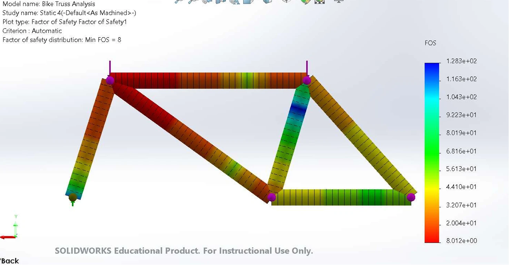
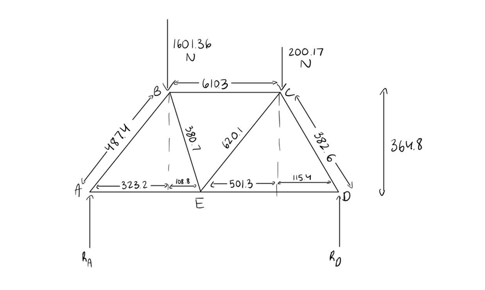
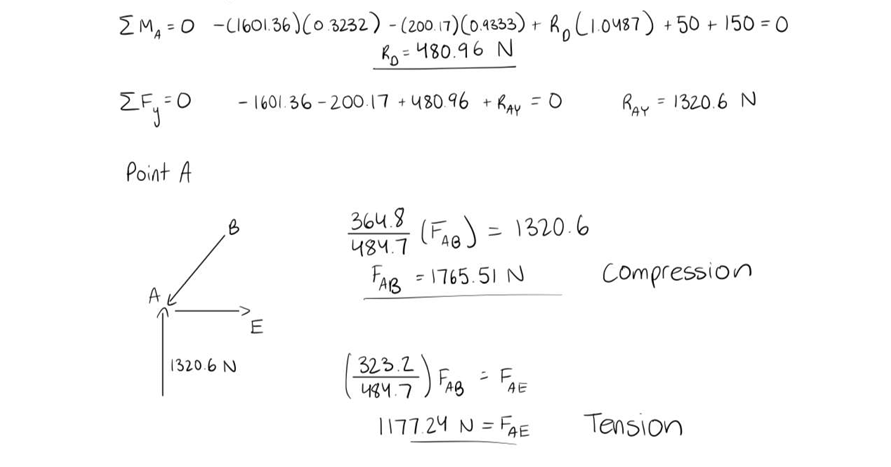
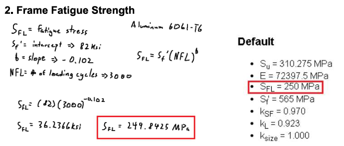
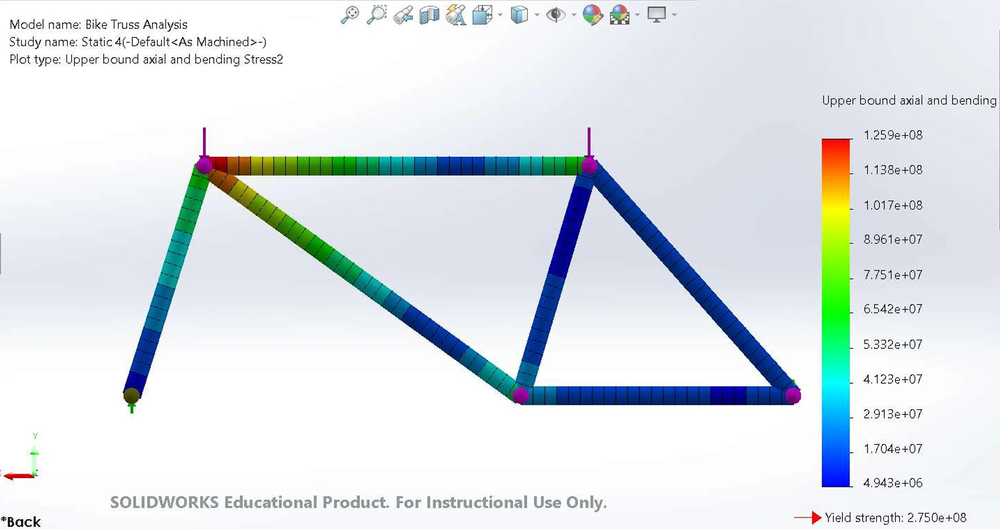

Mechanical · Structural Engineering · Oct — Dec 2023
Bike Frame Analysis
A five-person MSE 221 team project analyzing the structural strength of a bicycle frame under real riding loads — hand truss calculations, a SolidWorks FEA simulation, and a redesign that nearly quadrupled the frame's minimum safety factor.

Overview
For our MSE 221 final project, myself, Cole Castonguay, Jihoi Jung, Simr Virk, and Isac Yeung — all contributing equally — picked a real bike, the Marin Terra Linda 3 2021, and put its aluminum 6061-T6 frame through a full structural analysis: is it actually strong enough for how it's ridden, and if it isn't obviously overbuilt, where's the margin? We started by measuring the frame to build an accurate free-body diagram, then worked the problem two ways by hand — first treating the whole frame as a pin-jointed truss, then a more realistic version with the top tube removed and only the seat stay and chain stay treated as true truss members, everything else as beams carrying bending moments as well as axial load. Both hand analyses fed into a full SolidWorks FEA simulation treating every member as a beam, which is what let us actually trust the numbers.
We also calculated the material's fatigue strength directly — aluminum 6061-T6's endurance limit at 3,000 load cycles works out to about 250 MPa by the S-N formula, which we cross-checked against the eFatigue tool and matched. Under the loading we assumed (roughly 1600 N at the seat, 200 N at the front), the original frame held up with a minimum safety factor of 2.184 at the seat stay — its most stressed member — but that margin was tighter than we wanted to see on a bike's main structural bar. So we proposed a modification: increasing bar diameter from 30 mm to 50 mm and wall thickness from 1.5 mm to 2 mm, straight out of the stress formula (stress is force over area — more area, less stress, same load). Re-running the FEA on the modified frame dropped the seat stay's peak stress from roughly -1.34×10⁷ Pa to -5.92×10⁶ Pa and pushed the minimum safety factor up to 8.01, for a weight increase we judged negligible on what's already a cruiser-class bike — the kind of bike where a little extra mass in the tubing doesn't change how it rides.
Analysis & Redesign
From Hand Calcs to FEA
Two independent hand analyses, a fatigue check, a full SolidWorks simulation, and a redesign proven out by re-running the numbers.

Measuring the Frame
We started with a real bike — the Marin Terra Linda 3 2021 — and measured its frame geometry directly rather than working off a spec sheet, building it into a labeled free-body diagram with every joint (A through E) and bar length defined. That diagram, with an estimated 1600 N load at the seat and 200 N at the front, is what every calculation after it — hand or FEA — was built on top of.

Two Structural Assumptions, Worked by Hand
We solved the frame's internal forces by hand under two different assumptions. First, treating the entire frame as a pin-jointed truss — every bar takes pure axial load — and solving joint by joint for reaction forces, member forces, and stresses. Second, a more realistic combined model: the top tube removed and moments added at two joints, with only the seat stay and chain stay still treated as trusses while the rest carry bending as beams. The seat stay and chain stay came out more heavily loaded in the combined model, which made sense — with the top tube gone, more of the load had to route through those two bars instead of spreading across the frame.

Fatigue Strength of 6061-T6 Aluminum
Static strength isn't the whole picture for a bike frame that gets loaded and unloaded thousands of times, so we calculated the fatigue (endurance) strength of the aluminum 6061-T6 frame material using the standard S-N formula at 3,000 load cycles, landing on roughly 36.2 ksi — about 250 MPa. We cross-checked that number against the eFatigue tool referenced in the project brief and got the same rounded value, which gave us confidence the frame material has real margin against fatigue failure under normal riding, not just a single worst-case load.

SolidWorks FEA on the Original Frame
The hand calculations assumed pin joints or a simplified beam-truss split; the FEA simulation modeled every member as a beam and let SolidWorks solve the whole system at once. It confirmed the seat stay as the frame's riskiest member, peaking around -1.34×10⁷ Pa, with a minimum safety factor of 2.184 — safe, but the tightest margin anywhere on the frame. The FEA numbers didn't match our hand calculations exactly, which we flagged honestly in the report rather than papering over; the general pattern (seat stay and chain stay most loaded) held across every method we used, which is what actually mattered for deciding where to reinforce.
Redesigning the Bars, Then Re-Testing
Straight from the stress formula — stress equals force over area — the fix was to give the most-loaded bars more cross-sectional area: diameter up from 30 mm to 50 mm, wall thickness up from 1.5 mm to 2 mm, keeping the frame's original geometry so it would still fit and handle the same. Re-running the FEA on the modified frame dropped the seat stay's peak stress to about -5.92×10⁶ Pa and raised the minimum safety factor from 2.184 to 8.01 — roughly a 3.7× improvement — for a weight increase we judged negligible on a cruiser frame that was never chasing minimum weight in the first place.
Full Write-Up
Final Report
The full MSE 221 report — fatigue strength, both sets of hand calculations, FEA results, and the proposed redesign — submitted to Prof. Gary Wang.